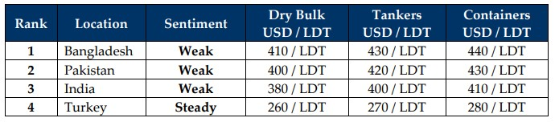

GMS Week 46 – DESPERATE DOWNERS?!
in Weekly Demolition Reports 17/11/2025

With the last 6 weeks of 2025 now firmly on the horizon, the final stretch of the year continues to demonstrate its sheer unwillingness to compromise as global economies are still reporting volatile movements of commodity prices and oil futures that are still unfolding with each passing week. But the ship recycling market economies are the ones generating even more confounding results amid an increasingly precariously posture at just how this momentum has been unravelling over the last 3 – 4 years and is now expected (feared) to likely continue deep into 2026.
While the Baltic Exchange Dry Index reported gains once again this week on the back of virtually all inclusive sub-sectors reporting improvements of their own through the week, oil futures on the other hand seem to be taking a beating after levels clocked the week out at USD 59.50/barrel after Ukraine successfully carried out a massive drone attack against Russia’s largest oil refinery located at Novorossiysk. The U.S. Dollar meanwhile continues its carnage across the globe as it firmed at nearly all locations across the board while local steel plate prices in the two steady recycling destinations retreated in varying degrees.
This double gut-punch targeted at the purchasing prowess of the ship recycling fraternity has driven demand and vessel offerings even further down this week as vintage tonnage starts to unexpectedly arrive at anchorages i.e. Bangladesh, which healthily beat India’s beaching quota for this week. Moreover, with freight rates continually rising / yielding profitable results for relevant stakeholders, recycling sales have been slow for the most part of the year even though sales activity has comparatively picked up a touch since the barren summer slump. Worse yet, many of the transactions concluded are at levels far below expectations and in the low USD 400s/LDT, with several reportedly in the high USD 300s/LDT on less preferred / small LDT tonnage.
Meanwhile, the poorer placed India and Pakistan continue struggling to register any worthwhile levels for owners / cash buyers despite the supply of older dry bulk units – particularly vintage handymax and panamax units including small -to medium- sized-tankers – registering an increase in the number of candidates being proposed for recycling. Yet, just how many are actually being concluded amidst a sea of boring offers remains inconclusive even though several end-of-life MR tankers, smaller product tankers, and a steady stream of occasional LNGs have kept ship recycling markets from dozing off completely in the latter part of this year.
Finally, as HKC developments have taken precedent over filling plots and with mandatory yard upgrades marring the recycling progress, Bangladesh remains with only 18 HKC approved yards while Pakistan is at the tail end of the race as it awaits its first HKC approval. And as the shipping calendar remains busy with various events over the past month or so, including Bahri week last week in addition to the recycling world convening in Hong Kong for the annual Tradewinds Ship Recycling forum, it remains a busy time for the industry – all while Turkey remains alone at the USD 2XX/Ton party awaiting a lone passerby.
For Week 46 of 2025, GMS Market Rankings / vessel indications are as below

📄 Download PDF: Ship-recycling-market-insight-Week-46-11-14-2025-Desperate_Downers.pdfSource: GMS,Inc. https://www.gmsinc.net/gms_new/index.php/web
 Translate
Translate{kind=link}